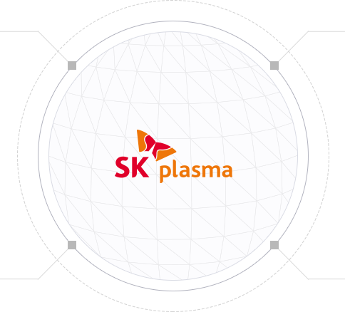
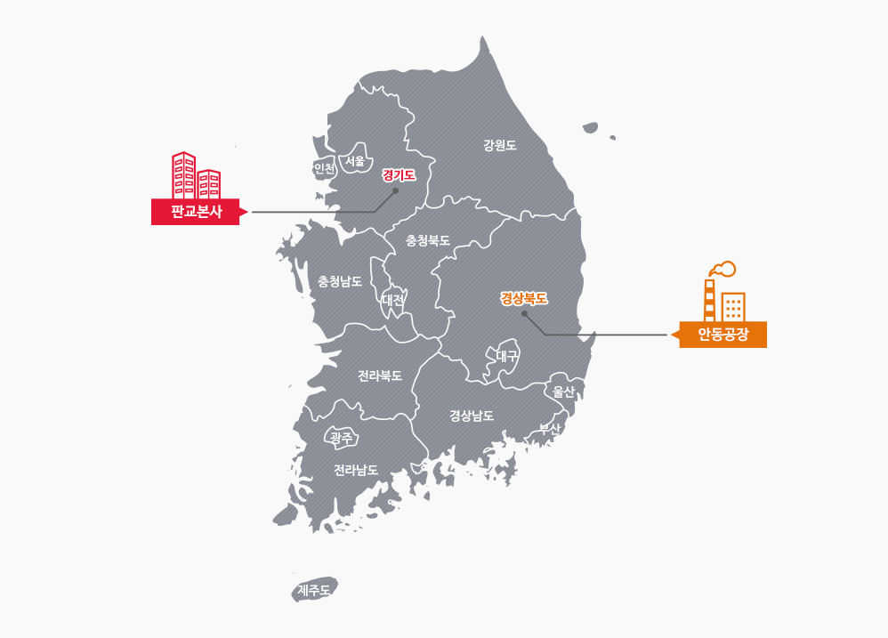

우리는 내일을 위한 가치를 만들어 갑니다
회사소개
회사개요
SK플라즈마는 국가 보건 안전망 역할과 사회적 가치를 창출하고 있습니다

Expertise
SK플라즈마는 1970년부터
혈액제 사업을 이끌어가고
있으며, 꾸준히 그 전문성을
키워나가고 있습니다.
Quality
철저한 품질관리 및 보증을 통해
일정한 고품질의 혈액제 제품을
공급하고 있습니다.
Safety
SK플라즈마는
안전한 혈액제 제품의
공급을 위한 생산 시스템을
갖추고 있습니다.
Future
안동에 신축한 최첨단
혈액제제 분획공장을 통해
생산 능력을 강화할 것이며,
사업 영역도 적극적으로
확장할 것입니다.
사업장 소개
" 대한민국 혁신성장의 희망의 빛, 판교테크노밸리 "
본사 (ECO Lab)
Eco Lab은 인류의 건강을 증진시키고 지구환경을 보호하고자 하는 우리 미션의 상징으로 지속성장이 가능한 미래사회를 추구하고자 하는 SK플라즈마의 약속입니다.
국제 친환경 인증 최고 등급을 획득한 친환경 건물
- 친환경자재 사용
- 에너지사용량 44% 절감
- CO2 발생 33% 절감
- 수자원 63% 절감
| 주소 | 경기도 성남시 분당구 판교로 310 [13494] |
|---|---|
| TEL | 02-2008-2901 |
| FAX | 02-2008-7899 |
" 대한민국 바이오산업의 중심 허브, 경상북도 안동 "
안동공장
안동공장은 품질과 안전을 최우선으로 하여 다양한 질환의 치료예방제를 제조하고 있습니다.
2016년 완공된 안동공장은 약 3만m2 부지에 최신 생산시설을 갖추고, KGMP 승인을 받았습니다
-
첨단 Process 구축
보관/분획/정제/충전/포장 구획을 집약해
운영의 효율성을 증대시키고 생산공정의
외부 오염 및 교차 오염으로부터 방지 -
효율적인 공정 관리
원격감시제어 시스템인 SCADA
(Supervisory Control and Data Acquisition)와
전력 실시간 운영/관리 시스템인
EMS(Environmental Monitoring System)의
중앙 자동화 시스템을 구축 -
에너지와 환경을 고려한 시스템 도입
에너지 사용 절감,
오염 물질 배출 최소화 등
| 주소 | 경상북도 안동시 풍산읍 산업단지길 157 [36618] |
|---|---|
| TEL | 054-851-4200 |
| FAX | 054-853-4401 |
회사위치
